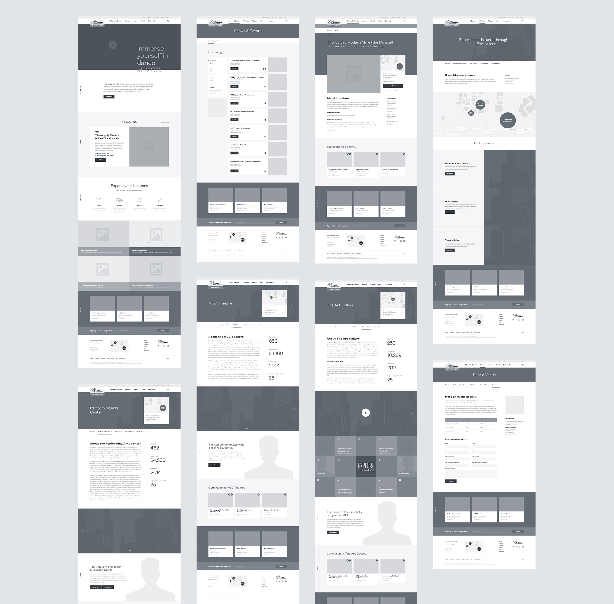

3단계 포트폴리오
Project
Planner
Portfolio
How to
sign in
UI구현

date
2019.05.30 ~ 2019.06.03
priority
1(가장 중요)
color
summary
HTML, CSS, Javascript를 이용하여 홈페이지를 제작하는 프로젝트입니다.
기획의도, 정보설계와 와이어프레임, 화면 흐름도를 피피티로 작성하고
홈페이지를 구현하면 완료
완료여부
Y
/ N
tag : 홈페이지 제작
MAIN STEP 1. 주제, 메뉴 정하기
SUB STEP)
제목
완료여부
1. 주제 정하기
2. 메뉴 정하기
3. 주제, 메뉴가 실현가능한 것인지 검토하기
4. 주제, 메뉴 확정
MAIN STEP 2. 와이어프레임, 화면흐름도 작성하기
SUB STEP)
제목
완료여부
1. 와이어프레임 작성하기(작성시 크기 고려)
2. 화면흐름도 작성하기
3. 와이어프레임, 화면흐름도에서 구현하지 않을 부분 결정
MAIN STEP 3. 화면 구현하기
SUB STEP)
제목
완료여부
1. 화면1 구현
2. 화면2 구현
3. 화면3 구현
4. 화면4 구현
5. 화면5 구현